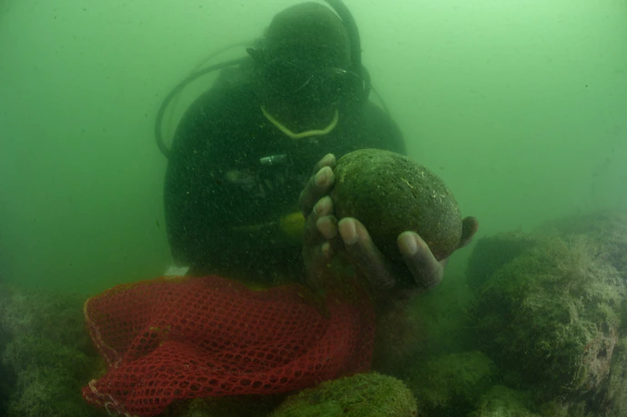

Magazine
A diver's hunt for lost slave ships led to an incredible journey
Read
Into the Depths: A 6-part series featuring Nat Geo Explorer Tara Roberts.
Read
Science
First dinosaur found with respiratory diesease
Read
Todays's Picks
Animals
Most U.S. eagles suffer from lead poisoning, study suggests